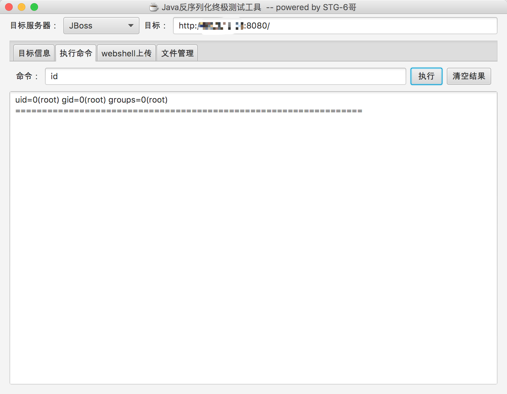

JBoss JMXInvokerServlet 反序列化漏洞¶
Red Hat JBoss Application Server 是一款基于JavaEE的开源应用服务器。这是经典的JBoss反序列化漏洞，JBoss在/invoker/JMXInvokerServlet请求中读取了用户传入的对象，然后我们利用Apache Commons Collections中的Gadget执行任意代码。
参考文档：
- https://foxglovesecurity.com/2015/11/06/what-do-weblogic-websphere-jboss-jenkins-opennms-and-your-application-have-in-common-this-vulnerability/
- https://www.seebug.org/vuldb/ssvid-89723
- http://www.freebuf.com/sectool/88908.html
- https://paper.seebug.org/312/
漏洞环境¶
执行如下命令启动JBoss AS 6.1.0：
docker compose up -d
首次执行时会有1~3分钟时间初始化，初始化完成后访问http://your-ip:8080/即可看到JBoss默认页面。
漏洞复现¶
JBoss在处理/invoker/JMXInvokerServlet请求的时候读取了对象，所以我们直接将ysoserial生成好的POC附在POST Body中发送即可。整个过程可参考jboss/CVE-2017-12149，我就不再赘述。
网上已经有很多EXP了，比如DeserializeExploit.jar，直接用该工具执行命令、上传文件即可：
